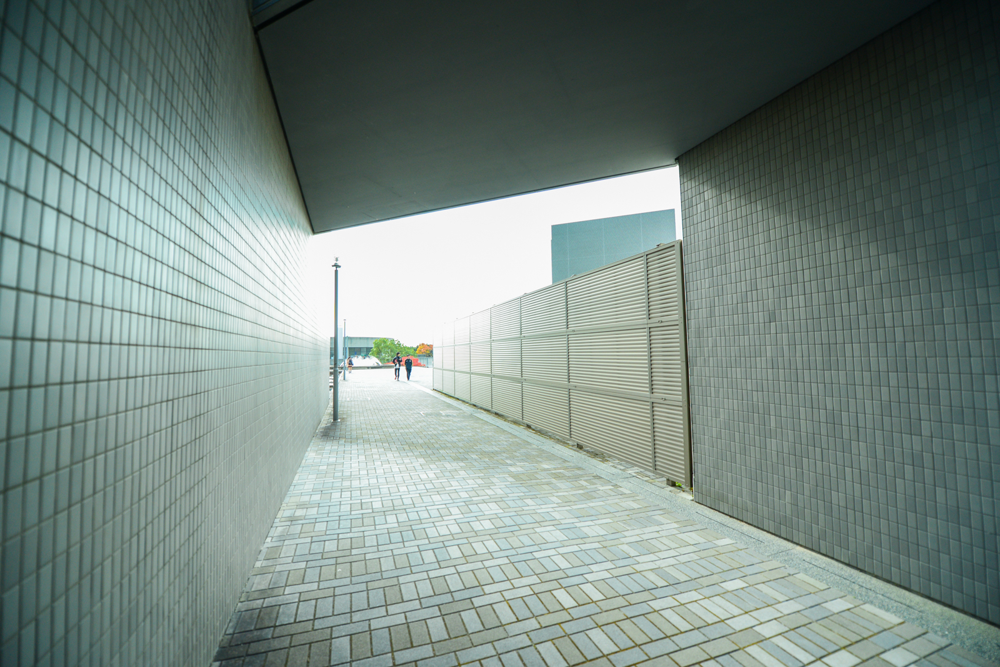

2015.05.23
第10回情報危機管理コンテスト 決勝進出

初開催以来10年連続で決勝戦に出場するという他に例のない実績を達成することとなりました．情報危機管理コンテストは情報セキュリティ人材を育成することを目的として実施されるコンテスト．参加チームは顧客企業のサーバの管理者となり，リアルタイム発生するインシデントに迅速かつ的確に対処することが求められます．また，インシデントへの対応力のみならず，電話対応を含めた現場対応の適切さもその評価対象となり，実践的なインシデントへの対応力が養われます．最優秀賞には経済産業大臣賞が授与され，同時開催される白浜シンポジウムへの招待を受けることがます．